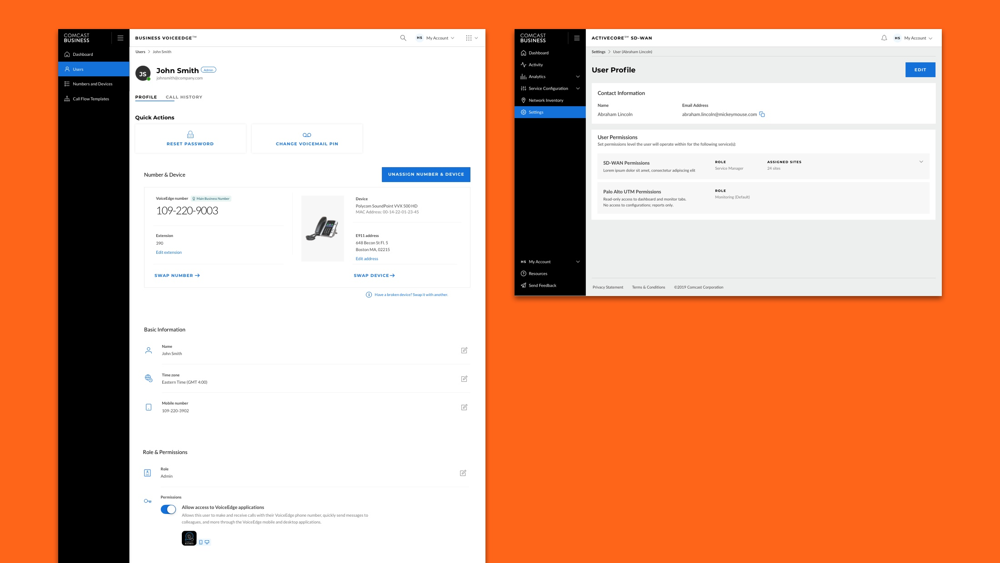
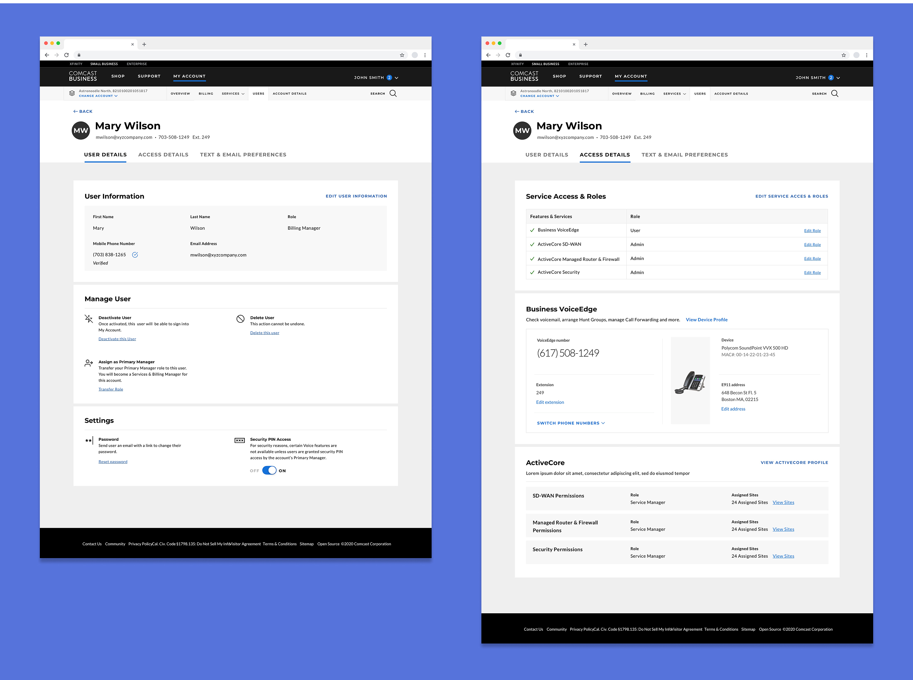
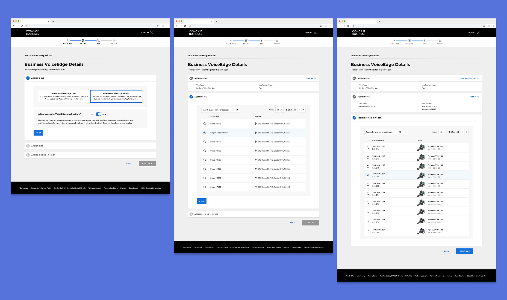
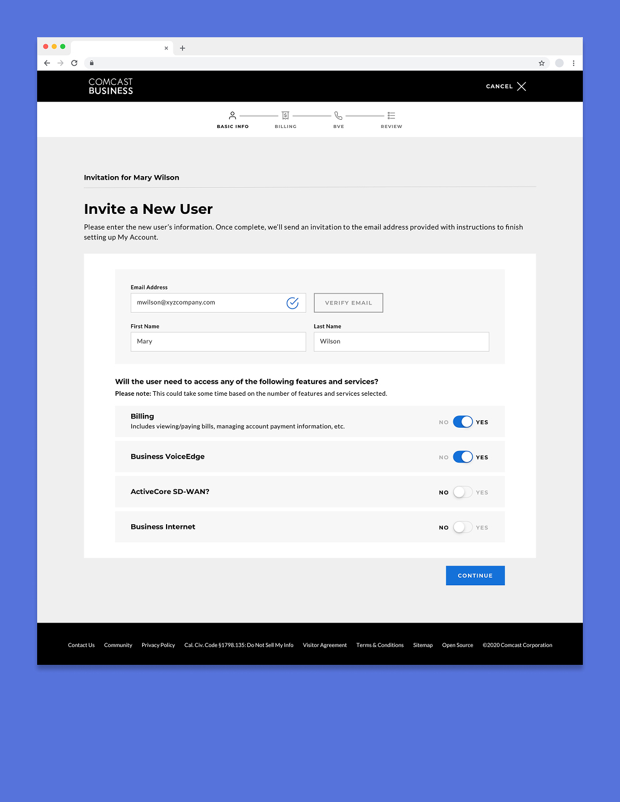
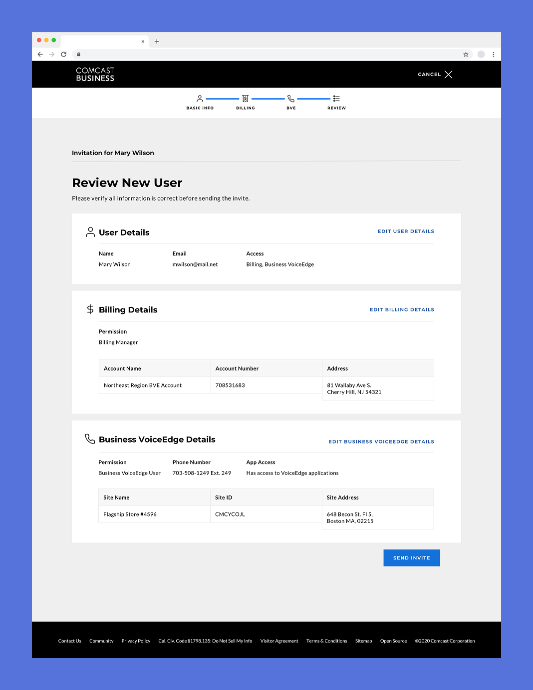
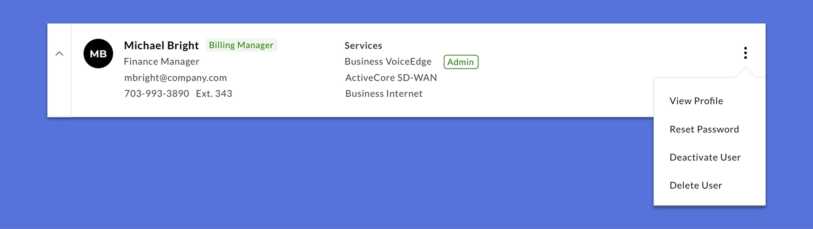
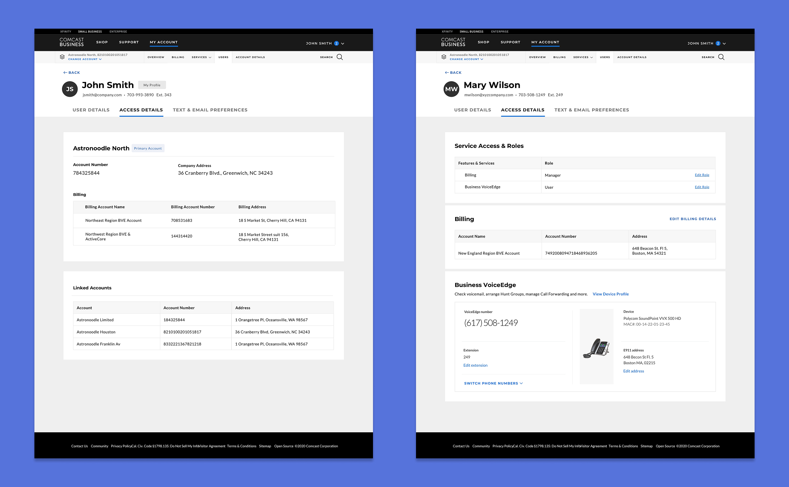

The current experience was inconsistent
In the current state, each service portal had it's own visual style and information hierarchy, creating navigation issues and increased cognitive load. User's couldn't depend on knowing where to look in each service portal for a specific action or piece of information. Some information, like name or email address, was listed in multiple places and there was no way to make changes on a system level, making it tedious for manager's to update and the potential for data inconsistency.

Inconsistent Designs - Business VoiceEdge (Phone) and ActiveCore SD-WAN (Networking) profiles have different button styles, information hierarchy and copy.
A user profile that’s comprehensive, but not overwhelming
It was user profile would make it easy for users to know where to go to if they needed to change a setting, but I had to make sure that they weren’t overwhelmed by trying to find what they needed when they got there. Research showed that many users weren’t visiting the portal frequently, so it was important that the UI minimized their cognitive load and made actions and information plainly visible at all times. In practice, this meant having clear and consistent titles for tabs, settings that were easy to find when scanning and links and buttons labeled with copy that clearly stated the action being taken.

Visual Hierarchy - Users are able to quickly scan the User Profile to find the setting or information they need.
A single workflow for creating every user
Managers found creating new user accounts tedious, having to go through multiple sign-up flows for each service they assigned. This often meant that full access was granted over multiple sessions or might not be completed. I combined these flows into a single, multi-step process that focused on presenting tasks in focused segments that didn’t overwhelm users. A visible timeline kept managers aware of their progress, decreasing abandonment.

Reduce Cognitive Load With a Multi-Step Flow - The three steps for granting phone access are presented individually, letting managers focus on one task at a time.

Select Services - One of the first step for managers is selecting the services they wanted to grant a user access. As they made selections, additional steps would be added to the timeline.

Review Invite Details - Before sending an invite, managers could review the details they had entered in a checkout screen and re-enter the flow to make any changes.
Let users skip the profile
Entries in the user directory were information dense, going beyond their name and contact info to include the access and role they had in regard to services. Frequently used actions for managers, like deactivating a user or resetting their password were accessible from a dropdown menu.

Reduce Cognitive Load With a Multi-Step Flow - The three steps for granting phone access are presented individually, letting managers focus on one task at a time.
Multi-Phase Approach
Enabling the large-scale changes in user management necessitated switching to a new back-end architecture, which was complex and would take an unknown amount of time. To accommodate this, I created multiple iterations of the experience that phased in new features (like an expanded user role structure over time) that could be implemented as back-end updates were made.

Features Implemented Over Time - Access Details screens at different phases of the technical implementation, starting with users only being able to view the accounts that they are able to access (left) and ending with access to the more granular role structure and details about specific services (right).